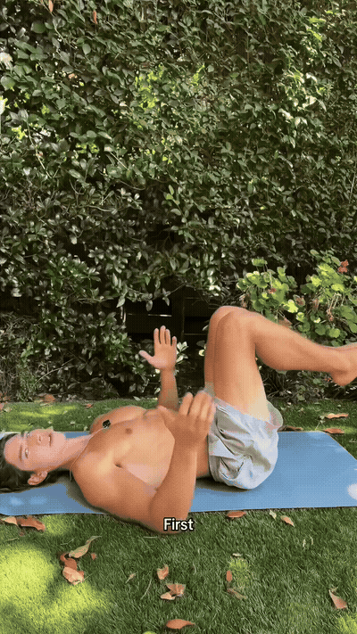
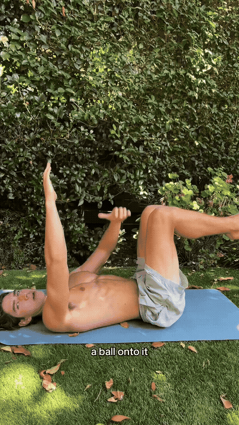
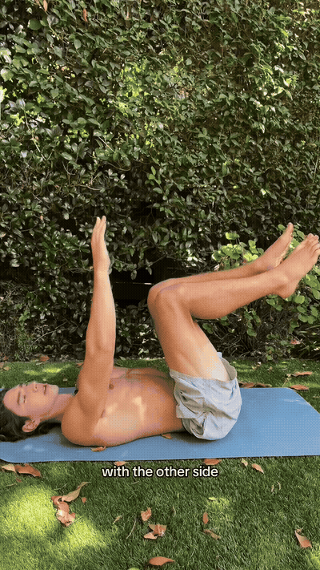
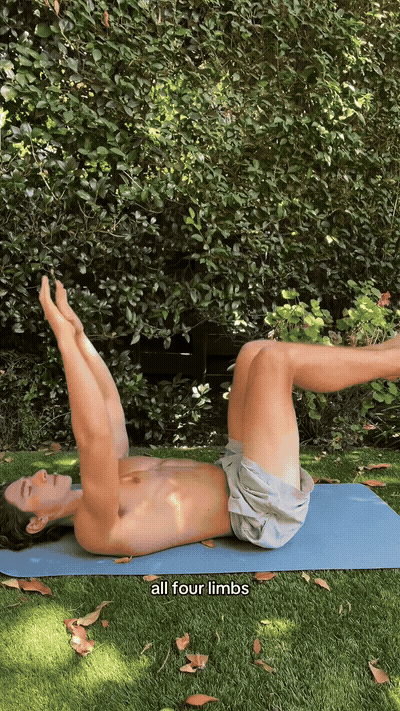

Lie flat on your back, knees at 90°, arms straight up over your face. Lower back flat on the ground — this is the whole exercise's reference position.

The core drill itself: one arm and the opposite leg lower slowly toward the ground while the brace holds the spine still.

Same drill, other side. Down, back, pause, back up — the pause is where the deep core holds.

The extra challenge: all four limbs lower and return at the same time. Only add this once both single sides are rock-steady.
The full protocol: build to 5–10 per side (10–20 total reps per set), 60 seconds rest, five rounds through.
It targets the layer crunches miss. The TVA is the deepest abdominal layer — the natural corset that pulls the waist in and supports the spine. Surface ab work never loads it.
The lower back is the gauge. If the lower back leaves the floor during a rep, the TVA lost the brace. That's the signal to slow down or regress, not push through.
Slow beats many. Every limb movement is slow, with an exhale on the return. Speed just hands the work to the hip flexors.